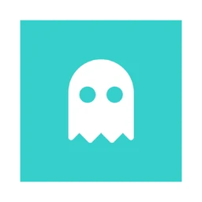

01
Tous tes comptes réunis
Un PEA à la banque, des ETF sur une appli, un peu de Bitcoin ailleurs : crée un compte par plateforme et vois tout ensemble, avec la valeur totale à jour.
PEA + ETF + crypto→Ghostfolio→1 tableau de bord

Actions, ETF, crypto : tous tes placements, sur tous tes comptes, dans un seul tableau de bord. Ton vrai gain, dividendes compris, et les risques signalés. Gratuit, open source, chez toi.

Ghostfolio est un gestionnaire de patrimoine pour particuliers : tu y ranges tes actions, ETF, cryptos, liquidités et autres avoirs, répartis sur plusieurs comptes et plateformes (un PEA, un compte-titres, une appli crypto…). Il met les cours à jour tout seul (Yahoo Finance, CoinGecko), calcule ton rendement réel dividendes compris (aujourd'hui, depuis le début de l'année, sur 1 an, 5 ans ou depuis le début), montre ta répartition par compte, devise, pays ou secteur, et son analyse X-ray signale les risques de concentration. Il s'utilise depuis un navigateur ou le téléphone (application web). Attention : il ne se connecte pas à ta banque, tes achats se saisissent ou s'importent. Ce n'est pas un conseiller : il montre, il ne recommande rien.
Avec docker compose et l'image officielle (elle lance aussi une base PostgreSQL et Redis) : copie le fichier .env.example en .env, choisis tes mots de passe, puis ouvre localhost:3333. Le premier compte créé devient administrateur.
Gratuit, chez toiImages officielles pour amd64, ARM 64 bits et ARMv7 : il tourne sur un Synology, un Raspberry Pi ou un serveur. Des paquets de la communauté existent pour Unraid, CasaOS, Umbrel et Home Assistant.
Idéal pour l'avoir partoutLa version hébergée par l'équipe du projet, sans rien installer, avec des données de marché professionnelles. Payante (de l'ordre de 40 à 50 $ par an selon les comparateurs, prix exact sur ghostfol.io) ; tes données sont alors sur leurs serveurs.
Payant, sans installationUn PEA à la banque, des ETF sur une appli, un peu de Bitcoin ailleurs : crée un compte par plateforme et vois tout ensemble, avec la valeur totale à jour.
Le rendement est calculé sur ce que tu as réellement investi, dividendes compris, pour aujourd'hui, l'année en cours, 1 an, 5 ans ou depuis le début.
L'analyse X-ray signale si une trop grosse part repose sur un seul compte, une seule devise ou une seule région, avec des seuils que tu peux régler.
Importe l'historique de tes achats (CSV ou JSON) une fois, puis ajoute chaque nouvel achat en quelques secondes : fini les formules et les cours recopiés à la main.
Installe-le sur ton NAS et ouvre-le sur ton téléphone comme une appli (PWA), avec le mode sombre et le mode Zen qui masque les montants.
Lancé en 2021 par Thomas Kaul, un développeur de Zurich, comme projet personnel, puis publié en open source : dans son article de lancement, il explique vouloir un outil utilisable de façon anonyme, loin des regards des grandes banques et des géants du web. De nouvelles versions sortent très souvent. Le projet repose encore beaucoup sur son créateur, et se finance avec la version en ligne Premium.
Plus de 5 900 commits et des versions publiées très souvent (2.248 et 2.249 à quelques jours d'écart sur Docker Hub).
Environ 9 600 étoiles, 1 400 forks et plus d'un million de téléchargements sur Docker Hub, mais un projet encore très porté par son créateur.
Installé chez toi, rien n'est partagé et aucune banque n'est connectée ; les noms des titres partent seulement chez Yahoo Finance ou CoinGecko pour les cours.
Open source sous AGPL-3.0, financé par la version en ligne Premium et des dons, sans publicité.
Développé depuis 2021 et passé en version 2 ; saisie manuelle obligatoire et cours parfois manquants pour les fonds européens.
Comment on note : 5 critères notés sur 5, vérifiés sur GitHub (README, licence, versions), Docker Hub et le blog du créateur le 16 novembre 2026. La note sur 10 est la moyenne ramenée sur 10.
Bon pour : Suivre actions, ETF et crypto sur plusieurs comptes, en privé
Bon pour : Le même outil sans rien installer, en soutenant le projet
Bon pour : La synchro automatique de tes comptes français, assurance-vie et immobilier compris
Bon pour : Des calculs de performance très poussés, sur un seul ordinateur
Aucun de ces outils ne remplace un conseil personnalisé : ils montrent tes placements, ils ne disent pas quoi acheter.

Chaque vidéo RepoPop t'explique un dépôt GitHub utile en moins d'une minute, avec son kit comme celui-ci.